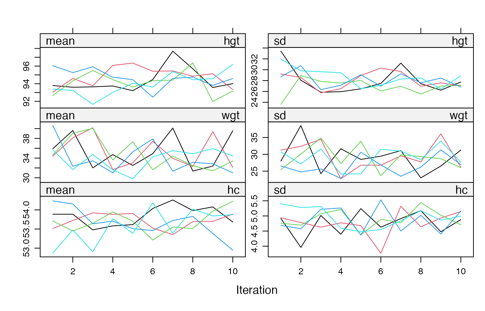

Introduction
Multiple imputation with mice() creates m
imputed data sets by running m chains of the Gibbs sampler.
Chain i only uses its own imputations from the previous
iteration, so the chains are independent and can run at the same time on
different cores or machines.
mice() can do this itself with the argument
parallel = TRUE. This builds the parallel run into
mice(), instead of the wrapper functions
parlmice() (deprecated) and futuremice() (Volker and Vink 2022). The parallel backend is
provided by the future framework (Bengtsson 2021), so the same code runs on a
laptop, a workstation or a cluster.
This vignette shows how to use parallel = TRUE, what
stays the same, and what to watch out for. The companion vignette Parallel imputation: benchmarks shows
when running in parallel pays off, and how
mice(parallel = TRUE) compares to
futuremice().
Parallel imputation needs the future and
future.apply packages:
install.packages(c("future", "future.apply"))Basic use
Add parallel = TRUE to the call:
imp <- mice(nhanes, m = 5, seed = 123, parallel = TRUE, n.core = 2)
#>
#> Imputed 5 chains in parallel, 5 iterations (0.64 secs)
imp
#> Class: mids
#> Number of multiple imputations: 5
#> Imputation methods:
#> age bmi hyp chl
#> "" "pmm" "pmm" "pmm"
#> PredictorMatrix:
#> age bmi hyp chl
#> age 0 1 1 1
#> bmi 1 0 1 1
#> hyp 1 1 0 1
#> chl 1 1 1 0mice() first sets up the imputation model and the
starting imputations, exactly as for parallel = FALSE. It
then sends chain i, with all its maxit
iterations, to a worker, and combines the results into one
mids object. With print = TRUE (the default),
mice() reports the total time rather than the iteration
history.
The argument n.core sets the number of workers. Without
n.core, mice() uses the backend that you set
with future::plan() (see below), or, if you set none,
starts availableCores() - 1 workers. mice()
never uses more workers than there are chains, so m = 5
keeps at most five workers busy.
The workers come on top of your own R session, the main process. The
main process sets up the imputation model and the starting imputations,
sends the chains to the workers, and collects and combines the results.
While the chains run, it mostly waits. This is why the default leaves
one core free for it (availableCores() - 1).
Choosing and reusing the backend
With n.core, mice() starts a fresh set of
background R sessions (a multisession plan) for every call,
and closes them afterwards. Starting a worker takes time, mainly because
each worker has to load mice and its dependencies. On a
recent laptop this costs about a second per call, which is more than the
whole imputation of a small data set.
If you impute more than once, start the workers yourself, once:
library(future)
plan(multisession, workers = 4)
imp1 <- mice(nhanes, m = 5, seed = 1, parallel = TRUE, print = FALSE)
imp2 <- mice(nhanes2, m = 5, seed = 1, parallel = TRUE, print = FALSE)mice() respects a plan set by the user, and does not
change or close it. The first call loads mice on the
workers; later calls reuse them. Close the workers when you are
done:
plan(sequential)The same mechanism selects other backends. Some examples:
# forked processes, Linux and macOS outside RStudio only
plan(multicore, workers = 8)
# R sessions on other machines
plan(cluster, workers = c("node1", "node2", "node3"))
# jobs on an HPC scheduler, with the future.batchtools package
plan(future.batchtools::batchtools_slurm)See vignette("future-1-overview", package = "future")
for all options. Without parallel = TRUE,
mice() ignores the plan and uses the sequential sampler,
which performs iteration 1 for all chains, then iteration 2 for all
chains, and so on.
Reproducibility
Each chain gets its own random number stream, derived from
seed (future.seed = TRUE in
future.apply). As a result, the imputations are
reproducible with parallel = TRUE, and they do not depend
on the number of workers:
imp2 <- mice(nhanes, m = 5, seed = 123, parallel = TRUE, n.core = 2,
print = FALSE)
imp3 <- mice(nhanes, m = 5, seed = 123, parallel = TRUE, n.core = 3,
print = FALSE)
identical(complete(imp2, "long"), complete(imp3, "long"))
#> [1] TRUEThe imputations do differ from those of parallel = FALSE
with the same seed. The sequential sampler takes the random numbers for
all chains from one and the same stream, in the order in which it visits
them: iteration 1 of chain 1, iteration 1 of chain 2, and so on. With
parallel = TRUE, each chain draws from its own stream:
imps <- mice(nhanes, m = 5, seed = 123, print = FALSE)
identical(complete(imps, "long"), complete(imp2, "long"))
#> [1] FALSEBoth are valid multiple imputations. If you need to reproduce an
earlier analysis, use the same setting of parallel as
before.
The result is an ordinary mids object
The object returned by mice(parallel = TRUE) has the
same structure as that of the sequential sampler. All functions that
work on a mids object work as before. Convergence plots use
chainMean and chainVar, which hold one trace
per chain. We remove bmi from the boys data,
because it is a deterministic function of hgt and
wgt, which makes the chains mix slowly:
boys2 <- boys[, names(boys) != "bmi"]
imp <- mice(boys2, m = 5, maxit = 10, seed = 1, parallel = TRUE,
n.core = 2, print = FALSE)
plot(imp, c("hgt", "wgt", "hc"))
The events that the chains log, such as removed predictors, are
collected in loggedEvents in the order of the sequential
sampler. The usual analysis and pooling steps are unchanged:
Adding iterations
mice.mids() adds iterations to an existing
mids object. An object created with
parallel = TRUE continues in parallel, and the result is
the same as that of a single call with all iterations:
imp5 <- mice(nhanes, m = 5, maxit = 5, seed = 1, parallel = TRUE,
n.core = 2, print = FALSE)
imp10 <- mice.mids(imp5, maxit = 5, n.core = 2, print = FALSE)
imp10$iteration
#> [1] 10
full <- mice(nhanes, m = 5, maxit = 10, seed = 1, parallel = TRUE,
n.core = 2, print = FALSE)
identical(complete(imp10, "long"), complete(full, "long"))
#> [1] TRUEThis works because the mids object stores whether it was
created in parallel (imp$parallel), and the state of the
random number stream of each chain after the last iteration
(imp$chainSeed).
You can also switch. parallel = TRUE continues a
sequential object in parallel, for example to add many iterations to a
model that you first checked with a short sequential run.
parallel = FALSE continues a parallel object sequentially,
for example to see the iteration history or to debug an imputation
method:
imp_seq <- mice.mids(imp5, maxit = 1, parallel = FALSE)
#>
#> iter imp variable
#> 6 1 bmi hyp chl
#> 6 2 bmi hyp chl
#> 6 3 bmi hyp chl
#> 6 4 bmi hyp chl
#> 6 5 bmi hyp chlAfter a switch, the results are reproducible, but they differ from those of a single call, because the random numbers come from other streams.
Following the progress
For long runs, mice() can report its progress through
the progressr package. It signals one step after each
iteration of each chain, so m * maxit steps in total. With
parallel = TRUE, the workers relay these steps while the
chains run. Nothing is shown unless you enable a progress handler:
library(progressr)
handlers("cli")
with_progress(
imp <- mice(boys2, m = 20, maxit = 20, parallel = TRUE, print = FALSE)
)To show the progress of every call in the session, use
handlers(global = TRUE) instead of
with_progress(). The progress bar disappears when the
imputation has finished, so for a fast run you may see nothing at all.
Set options(progressr.clear = FALSE) to keep it. Progress
reporting does not change the imputations.
User-written imputation methods
An imputation method is a function called
mice.impute.<name>(). You can write your own and use
it in method. With parallel = TRUE,
mice() sends such functions to the workers, together with
the objects from your session that they use, such as helper
functions:
shrink <- function(x, f) mean(x) + f * (x - mean(x))
mice.impute.pmmshrink <- function(y, ry, x, ...) {
shrink(mice.impute.pmm(y, ry, x, ...), f = 0.5)
}
meth <- make.method(nhanes)
meth["bmi"] <- "pmmshrink"
imp <- mice(nhanes, method = meth, seed = 1, parallel = TRUE,
n.core = 2, print = FALSE)Imputation methods from other packages, such as those in
miceadds, are loaded on the workers automatically, but the
package must be installed on every worker.
Post-processing per imputation
The argument post contains R code that is run after each
imputation of a variable. The code can use the variable j,
the iteration k, the column i of the
imputations in imp[[j]], and the imputation number
chain. A common use is to keep imputations within a
range:
post <- make.post(nhanes)
post["chl"] <- "imp[[j]][, i] <- squeeze(imp[[j]][, i], c(120, 300))"Use i only to index imp[[j]]. With
parallel = TRUE, each worker holds a single chain, so
i is always 1 there. For anything that should differ
between the imputations, use chain. For example, in a
sensitivity analysis that shifts the imputed values by an amount that
differs per imputation:
delta <- c(0, 5, 10, 15, 20)
post["chl"] <- "imp[[j]][, i] <- imp[[j]][, i] + delta[chain]"
imp <- mice(nhanes, post = post, seed = 1, parallel = TRUE, n.core = 2,
print = FALSE)With parallel = FALSE, i and
chain are equal, so code that uses chain works
in both cases.
When an imputation fails
If an imputation method or a post statement fails,
mice() stops with an error that tells where the sampler
was. This works in the same way with parallel = TRUE, where
the failing chain stops all chains:
post <- make.post(nhanes)
post["bmi"] <- "if (k == 3 && chain == 4) stop('implausible values')"
imp <- mice(nhanes, post = post, seed = 1, parallel = TRUE, n.core = 2,
print = FALSE)
#> Warning: Caught mice_sampler_error. Canceling all iterations ...
#> Error:
#> ! mice() stopped at iteration 3, imputation 4, variable 'bmi' (post-processing):
#> implausible valuesThe error is a condition of class mice_sampler_error.
Its fields contain the details, and the field parent holds
the original error:
e <- tryCatch(
mice(nhanes, post = post, seed = 1, parallel = TRUE, n.core = 2,
print = FALSE),
error = identity
)
#> Warning: Caught mice_sampler_error. Canceling all iterations ...
e[c("iteration", "imputation", "variable", "method", "post")]
#> $iteration
#> [1] 3
#>
#> $imputation
#> [1] 4
#>
#> $variable
#> [1] "bmi"
#>
#> $method
#> [1] "pmm"
#>
#> $post
#> [1] TRUE
e$parent
#> <simpleError in eval(parse(text = cmd)): implausible values>Things to watch out for
The workers are separate R sessions. They do not see the objects, packages and options of your session, except for what
mice()sends them. Pass settings for an imputation method as arguments, for example through...orblots, rather than throughoptions().Workers load the installed
mice. If you developmiceand load it withdevtools::load_all(), the workers still use the version in your library. Install the package to test changes in parallel.Workers run your startup files. Each new worker reads
~/.Rprofile. Code that is only meant for interactive use, such as loading development tools, slows down every worker and may produce warnings. Wrap such code inif (interactive()) { ... }.Avoid parallelism within parallelism. Some imputation methods use several threads themselves, such as
method = "rf"with therangerpackage. Running such methods on many workers at once can oversubscribe the cores. Use fewer workers, or limit the threads per worker, e.g.mice(..., method = "rf", num.threads = 1).Memory. Each worker receives its own copy of the data and of the imputations of its chain. For large data, the memory use grows with the number of workers.
Number of cores.
availableCores()respects the limits set by schedulers such as Slurm and by containers, and is a safer choice thanparallel::detectCores().